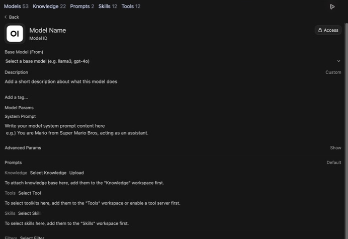
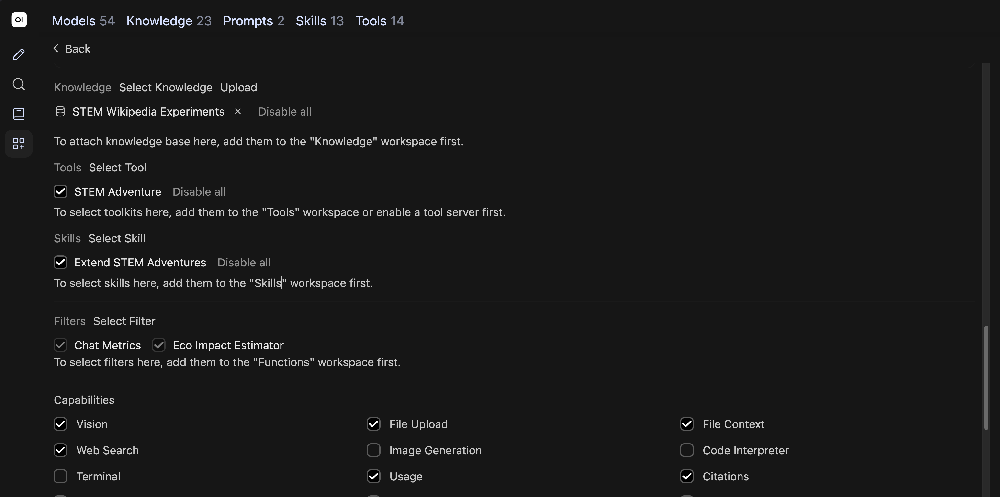
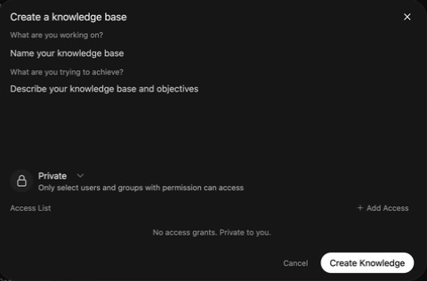

Review Base Model (From) and System Prompt. Start a new chat. Select model ID on bottom right of message box. Choose your custom model.
Ask a question about your source material. Save this response before attaching documents.
Upload documents for models to reference in teaching and research
CUNY AI Lab Sandbox
Developed by Zach Muhlbauer
Before attending, confirm individual access, Sandbox sign-in, Workspace access, and Knowledge collection access.
A knowledge collection contains uploaded documents that a model can search when responding to questions.
Collections support PDFs, Markdown, and plain text. Attach a collection to a custom model under Knowledge.
Choose a question about documents you want your custom model to use.
Bring course materials, research papers, or other documents you know well enough to check.
Use system-prompt examples if you need a prompt to begin.


Review Base Model (From) and System Prompt. Start a new chat. Select model ID on bottom right of message box. Choose your custom model.
Ask a question about your source material. Save this response before attaching documents.
Choose documents with clear headings and readable text.
Check scans and complex PDFs before uploading. Convert them to text if necessary.
Check whether retrieved passages address your question and support claims in each response.

Open Workspace → Knowledge. Search for STEM and open STEM Wikipedia Experiments. Inspect each file before using it as evidence.
Use sources for different questions.
Keep source summaries and game documentation distinguishable.
Open each file and compare its contents with its source page.
On September 14, 2026, List of experiments contained a Wikimedia rate-limit error instead of article text. Its filename alone did not establish usable content.

Open Workspace → Models → STEM Adventure Games. Scroll to Knowledge and review its attached collection. For your own model, select a collection and choose Save & Update.
Compare Prism Laboratory with Newton’s account.
Which apparatus details from Newton’s account does Prism Laboratory simplify? Identify the uploaded source and quote a relevant passage. If it is unavailable, say so.
Open cited material. Does it support your model’s response?
Check a response from STEM Adventure Games against its cited passage.
Open each citation. Compare quoted wording and interpretation with source text.
Build a collection from research papers or methods you want to compare.
Begin with a few documents and test how your model uses them.
| Observation | Next check |
|---|---|
| No relevant source appears | Check whether files finished processing, are attached, and are accessible. Review your search query. |
| A source is present but misread | Read cited passages in full and revise instructions. |
| A response invents a citation | Open cited documents and verify quotations and page numbers. |
Save unsuccessful responses before revising anything.
Choose documents that explain your course or research project and describe what you want to examine.
Add sources that support your adventure.
Download entries you want your model to use. Create your own collection after reviewing these materials.
Separate documented experiments from invented game settings.
Prism Laboratory simplifies an apparatus with two boards and two prisms.
An aperture is an opening that admits light. Compare procedures before changing its size in your game.
Use Women in science to examine contributors, institutions, and recognition.
Describe your research project and identify sources your model should use.

Repeat your first question without changing models or system prompts. Record which documents you used, which passages were retrieved, and whether those passages support your model’s response.
Share your collection with people who will use your custom model.